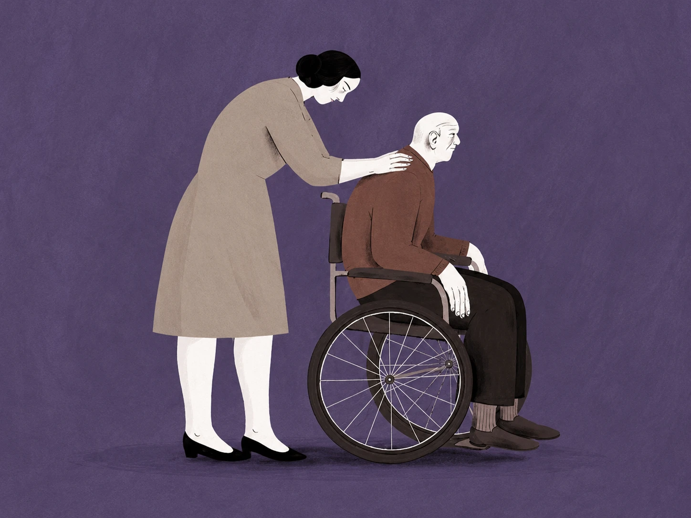

Curso grátis · 5 lições · ≈ 40 min
Primeiros socorros psicológicos para cuidadores de pessoas com demência.
Começar o curso≈ 8 min
≈ 8 min
≈ 8 min
≈ 8 min
≈ 8 min
No fim, sabe preparar-se para uma crise e dar primeiros socorros psicológicos à pessoa de quem cuida e a si próprio.
O que muda numa crise e os 3 passos dos primeiros socorros psicológicos
Bruno Lopes
Abrir · 8 minKit de conforto, ficha da pessoa e plano de apoio
Tiago Teixeira
Abrir · 8 minAcalmar a pessoa e acalmar-se a si
Rodrigo Silva
Abrir · 8 minO que atender primeiro e quando pedir ajuda
Ricardo Ferreira
Abrir · 8 minRetomar a rotina e vigiar os sinais das semanas seguintes
Evandro Carvalho
Abrir · 8 minL2 · Antes · ≈ 8 min · Tiago Teixeira
▸ Transcrição (abre e fecha)
1 · Vídeos
2 · Visita 3D à casa
3 · Atividade: complete o kit
4 · Quiz com feedback
5 · Recursos em PDF
Vai aprender a preparar o kit de conforto, a ficha da pessoa e o plano de apoio.
Encontre o kit, o caminho livre e a rede de apoio. pessoa com demência · cuidador
☐ Medicação e receitas ☐ Objeto de conforto
☐ Ficha da pessoa ☐ Contactos da rede
⬇ Checklist do kit (PDF)
⬇ Ficha da pessoa (PDF) ⬇ Plano de apoio (PDF)
L2 · Quiz · pergunta 2 de 4
Ainda não: num sítio estranho, o novo pode confundir ainda mais; acalma o que é familiar.
Certo, porque os objetos e os hábitos familiares levam um pouco de casa para o sítio novo.
Somos cinco estudantes do ISEP. Cada um fez uma lição. Carregue num de nós para ouvir o seu papel.
L1 · Compreender
L2 · Antes
L3 · Durante
L4 · Durante
L5 · Depois
Feito na UC de Conceção e Autoria Multimédia (CAMUL 2026/27). O curso também está publicado na Udemy.
Curso grátis · 5 lições · ≈ 40 min
Primeiros socorros psicológicos para cuidadores de pessoas com demência.
Começar o cursoL2 · Antes · ≈ 8 min
Ocupa o ecrã inteiro ao entrar.
L2 · Quiz · 2 de 4